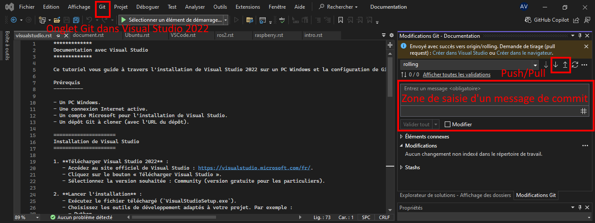

Documentation avec Visual Studio
Ce tutoriel vous guide à travers l’installation de Visual Studio 2022 sur un PC Windows et la configuration de Git dans Visual Studio pour cloner un dépôt.
Prérequis
Un PC Windows.
Une connexion Internet active.
Un compte Microsoft pour l’installation de Visual Studio.
Un dépôt Git à cloner (avec l’URL du dépôt).
Installation de Visual Studio
Télécharger Visual Studio 2022 : - Accèdez au site officiel de Visual Studio : https://visualstudio.microsoft.com/fr/. - Cliquez sur le bouton à Télécharger Visual Studio �. - Sélectionnez la version souhaitée : Community (version gratuite pour les particuliers).
Lancer l’installation : - Exécutez le fichier téléchargé (VisualStudioSetup.exe). - Choisissez les outils de développement adaptés à votre projet. Par exemple :
Python.
“Développement avec .NET”.
“Développement multiplateforme avec C++”.
Cliquez sur “Installer” pour lancer le processus.
Warning
Visual Studio est un logiciel assez volumineux, veillez à ne cocher que les environnements de développement donc vous avez besoin pour éviter de prendre trop de volume sur votre ordinateur.
Configuration initiale : - Une fois l’installation terminée, ouvrez Visual Studio. - Connectez-vous avec votre compte Microsoft si demandé.
Git dans Visual Studio
Vérifier que Git est installé : - Visual Studio inclut un client Git intégré.
Configurer les paramètres Git : - Ouvrez Visual Studio. - Allez dans “Outils” > “Options”. - Naviguez vers “Contrôle de source” > “Paramètres globaux Git”. - Configurez les informations suivantes :
Nom d’utilisateur : Votre nom pour les commits Git.
Adresse e-mail : L’adresse e-mail associée à votre compte Git.
Cloner un dépôt Git : - Cliquez sur “Git” dans la barre d’outils principale de Visual Studio. - Sélectionnez “Cloner un dépôt”. - Collez l’URL du dépôt Git que vous souhaitez cloner. - Sélectionnez le répertoire local où les fichiers seront enregistrés. - Cliquez sur “Cloner”. - Une fois le dépôt cloné, il sera visible dans l’explorateur de solutions de Visual Studio (onglet à droite)
Modifications du code hébergé sur Git
Effectuer un commit local : - Modifiez un fichier dans le projet cloné. - Cliquez sur “Git” dans la barre d’outils principale de Visual Studio. - Ajoutez un message de commit et cliquez sur “Commit”.
Pousser les changements : - Cliquez sur “Pousser” pour envoyer les changements vers le dépôt distant.
{kind=link}
